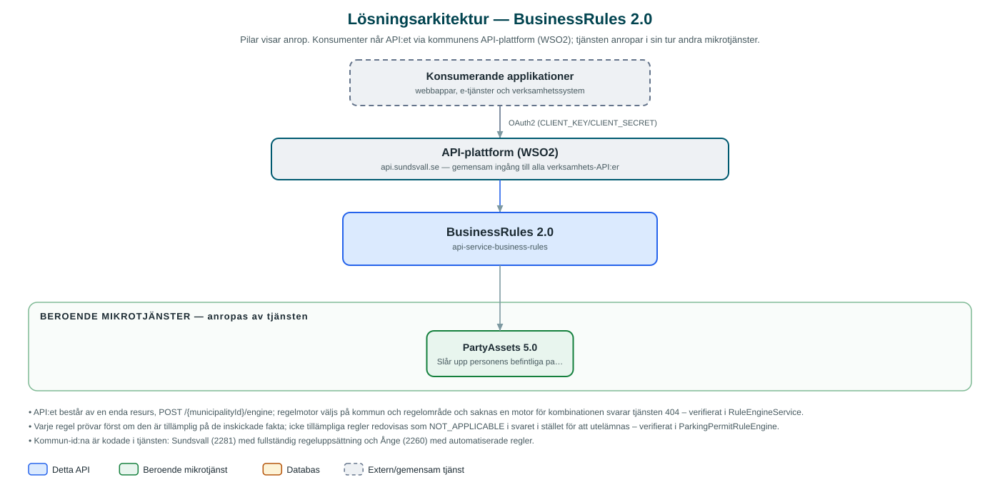

BusinessRules
Regelmotor som utvärderar verksamhetsregler – i dag för parkeringstillstånd för rörelsehindrade – och ger ärendehandläggningen ett maskinellt beslutsunderlag.
Om API:et
Vid myndighetsutövning ska samma regler tillämpas lika för alla. BusinessRules samlar verksamhetsreglerna i en central regelmotor: anroparen skickar in fakta om ett ärende och får tillbaka ett utvärderat resultat per regel, med motivering. Det gör att ärendeprocesser kan automatisera bedömningar utan att reglerna dubbleras i varje system.
Det regelområde (context) som är implementerat är parkeringstillstånd för rörelsehindrade. Reglerna täcker nyansökan och förnyelse för förare respektive passagerare samt förlorat tillstånd, och bygger på kriterier som gångförmåga, läkarintyg, passfoto, varaktighet, signatur, polisanmälans format och återkommande förluster.
Regelmotorn väljs per kommun och regelområde: Sundsvall och Ånge har egna motorer för parkeringstillstånd, där Ånges variant kör automatiserade regler. Varje regel avgör själv om den är tillämplig på de inskickade fakta – icke tillämpliga regler rapporteras som sådana i svaret i stället för att utelämnas.
Det här gör API:et
- Regelutvärdering – Tar emot ett regelområde och en uppsättning fakta och returnerar resultat per regel: PASS, FAIL, VALIDATION_ERROR eller NOT_APPLICABLE, med beskrivningar.
- Parkeringstillstånd – Regler för nyansökan och förnyelse för förare och passagerare samt förlorat tillstånd.
- Kriteriebaserade bedömningar – Reglerna byggs av återanvändbara kriterier, t.ex. gångförmåga, läkarintyg, passfoto, varaktighet och återkommande förluster.
- Kommunspecifika motorer – Regelmotor väljs utifrån kommun och regelområde – Sundsvall och Ånge har egna motorer, där Ånges kör automatiserade regler.
- Uppslag av befintliga tillstånd – Kriterier som rör aktiva, utgående eller förlorade tillstånd kontrolleras mot tillgångstjänsten PartyAssets.
API-dokumentation
API:ets samtliga resurser, parametrar och datamodeller finns beskrivna i en OpenAPI-specifikation som är hämtad ur källkodsförrådet. Den kan utforskas interaktivt i Swagger UI eller laddas ner som YAML.
Teknisk dokumentation
Nedan beskrivs hur tjänsten är uppbyggd, vilka andra tjänster den anropar och vad som krävs för att driftsätta den. Informationen är härledd ur källkoden och dess konfiguration på GitHub.
Arkitektur

API:et är en mikrotjänst (Java 25, Spring Boot via kommunens gemensamma tjänsteplattform dept44 (8.0.8), byggd med Maven). Konsumenter når tjänsten via kommunens gemensamma API-plattform (WSO2) på api.sundsvall.se – tjänsten anropas aldrig direkt. Tjänsten anropar i sin tur andra mikrotjänster i kommunens tjänstelandskap.
Teknikstack
- Språk: Java 25
- Ramverk: Spring Boot via kommunens gemensamma tjänsteplattform dept44 (8.0.8), byggd med Maven
- Övrigt: Egenutvecklad regelmotor (Rule/Criteria-abstraktioner), Feign-klient genererad ur PartyAssets-specifikationen, Guava
Beroenden till andra mikrotjänster
Tjänsten anropar följande mikrotjänster. Versionerna är hämtade ur källkodens integrationsklienter.
| Tjänst | Version | Användning |
|---|---|---|
| PartyAssets | 5.0 | Slår upp personens befintliga parkeringstillstånd för kriterier om aktiva tillstånd, utgående tillstånd och återkommande förluster. |
Konfiguration och driftsättning
- application.yml med URL och OAuth2-klientuppgifter för PartyAssets
- Ingen databas – regler och kriterier är implementerade i kod
- Anrop görs per kommun – municipalityId ingår i API-vägen och avgör vilken regelmotor som används
Noterbart ur källkoden
- API:et består av en enda resurs, POST /{municipalityId}/engine; regelmotor väljs på kommun och regelområde och saknas en motor för kombinationen svarar tjänsten 404 – verifierat i RuleEngineService.
- Varje regel prövar först om den är tillämplig på de inskickade fakta; icke tillämpliga regler redovisas som NOT_APPLICABLE i svaret i stället för att utelämnas – verifierat i ParkingPermitRuleEngine.
- Kommun-id:na är kodade i tjänsten: Sundsvall (2281) med fullständig regeluppsättning och Ånge (2260) med automatiserade regler.
- Kriterierna för aktiva och utgående tillstånd samt återkommande förluster hämtar personens tillgångar från PartyAssets – regelmotorn är i övrigt självständig.
Källkod
Källkoden är öppen och finns hos Sundsvalls kommun på GitHub. I källkodsförrådet finns även instruktioner för att klona, konfigurera och starta tjänsten i egen miljö.